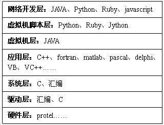

站长原创，版权所有ITEEDU，2009-9-30
现在有很多言论都在说高级语言好，低级语言没必要学。很多初学者都盲目的听了，不学汇编之类的低级语言。有的甚至连C都不学了，因为C是面向过程的，现在都面向对象了，学也学C++呀，或直接学java。
这种看法是完全错误的。
语言的高低是指语言在哪个层面上编程，越低层的编程反而越难，越要求有高超的技巧。我想最低层编程的就是用直接硬件完成功能了，这好像就不叫编程了，呵呵。
不同层面的编程用的语言也是不同的，同一层面语言的特点也是不同的。如下图应用层众多语言都有其特长，要根据需求选择。

上述层次仅为个为观点。但可以看出，语言是众多的，就像现在人们都在学英语言，但小语种也是很火的。所以语言没有高低贵贱之分。但就像现在英语是必备的一样，C也是编程必备的编程语言。
C在系统开发，驱动开发，程序高速模块开发方面用的最多。
JAVA一般开发应用软件，WEB开发等。
Python功能强大，一般可以作脚本语言用，还可以开发应用软件，WEB开发，程序模型开发。
Ruby和Python属同类。
C++好像都可以，但都不是最强的。也不太好学。属专家用的。
还有不常用的
fortran和matlab用于科学和工程计算
pascal和Visual Pascal（delphi）一个过程化一个面向对象，就像C和C++一样。不过没C和C++火。
基它的还有很多，就不多说了。